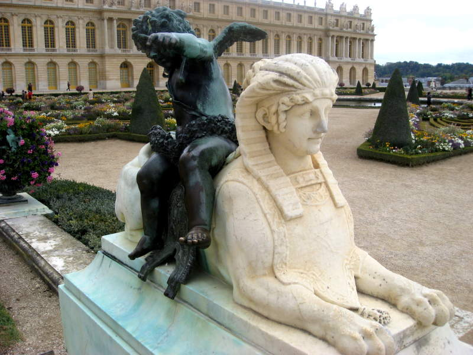

One of my main targets when visiting Paris was just outside of Paris, in Versailles. The Palace of Versailles, where lots of treaties were signed and where royalty lived. This is just a pretty road leading up to it.
The Palace of Versailles! Will refer to it just as "Versailles", although that could also refer to the town this is in. It was a bit difficult to figure out what I was looking at. Is that one building or a collection of them? Nothing was particularly threatening, so I went in to investigate.
They just did some sort of restoration to Versaille's golden gate. The hinges were secure, so there was no way I could steal it.
A statue outside of Versailles. The lines were quite long, so you could understand me taking this picture while I was waiting.
While you can see some renovation going on in the back, the thing I wanted to point out is that odd little gold balloon thing. I don't know if King Louis XIV ever knew what a balloon was. He died in 1715 and the first balloon was invented in 1709, so it was a close call. He might have been too loony to care about new inventions.
Here's a chapel the King Louises liked to pray in.
Versailles was full of artwork, much of it depicting battle scenes. What am I looking at here, tanks?
A fun painting with a bloody slaughter, an angry volcano, and a feathery commander with an angel flying overhead.
There were plenty of portraits. Portraiture was big business back in those days. Some showed props depicting what the subject's job was. Eventually they moved away from that, wanting the portrait to describe the person without props.

Many might think of urns holding ashes of loved ones. This one is too big for that though. Perfect for jungle juice at a frat party though!
Right now, I'm using a $30 dresser I bought off Craigslist.
Just a tip. Adjusting contrast in Photoshop does wonders for these cool warrior statues.
Here's another silly balloon sculpture. They were exhibiting an artist that likes balloon sculptures, so every room in the chateau had something equally silly in it. I wanted to see Versailles, not someinflatable canine.
Just like many ceilings in Rome, this painting showed an opening to heaven.
King Louis's bed. I didn't measure it, so no, I don't know if it was king-sized. Probably not.
Glass chandeliers have to be a pain to clean up if they ever fall.
While viewing the chateau, I peeked outside and saw some of the garden.
Look at that! In that elegant white sculpture, they have the horse trampling that poor guy. What a horrible death!
Here's something famous. The Hall of Mirrors. It looks good here, but being there, it felt like it was hard for royalty to astonish their guests any better. You had an amazing view of the garden, and so much light reflecting off mirrors and chandeliers and...wait a sec. What's that blue thing back there! It's a balloon sculpture! How awful!
I could've sworn I took a picture of the king's bed already. Maybe this was for a different King Louis. King Louis XIV, XV, and XVI all could have slept here.
Here's the queen's bed. I couldn't take a picture of the whole bed. Either the top or bottom. And I didn't want to make you look at two pictures of the same bed. Therefore, you get the half I liked better -- the canopy.
The gardens of Versailles were huge. These guys are the masters of hedge-clipping. I bet Edward Scissorhands would bow in reverence.

I took this picture, because the guy taking my picture in front of this didn't get a very good angle. This lets you see the angel-sphinx sculpture unobstructed. Note the nose is intact. Pesky Napolean.
Me at Versailles. Note my Guinness jacket still looks pretty swank even in Versailles. In fact, see my watch? The guy who sold me my ticket actually complimented me on it. My watch is that impressive. Oh crap. My sweater's tucked in. So much for being fashionable. It doesn't look THAT bad, does it? I don't get why you can't tuck in sweaters.
Lots of tiny flowers at Versailles made me switch my camera to digital macro mode.
Some purple tiny flowers.
Here's a tiny pink flower. When you magnify things enough, it seems like you're looking at pictures from a hidden, alien world.
A sweeping shot of a hedge cut to look like something, looking out over the lake.
I zoomed in on that something.
The hedge is apparently a horse, at least on one side. You can see the people underneath to get an idea about how huge it was.
I liked seeing the palace as a backdrop to the garden. It is weird to see a garden where so many of the plants are not... well... planted.
Here's one of the outer hedge-walls of the vast labyrinth of the Versailles gardens.
This is one of the pathways leading into the garden.
You can see this hedge-walled path leads past two fountains.
I took that pathway and made a few turns. Eventually I came to this crossroad. A lot of times, you could look around and see where the palace was. I was never in a large maze before though, so I did the best I could to forget where I was and find confusing places. I could not see the palace from here!
Here's a map and an explanation of much of this.
Another winding path in the Queen's Grove.
None of the fountains were running. It was admittedly cold while I was there. Not cold enough to freeze this water, nor to stop me from exploring. I planned on spending 3 hours at Versailles, then maybe seeing the Louvre afterward. I ended up spending the whole day here, and not because I was lost. It was just so cool to find new things around each corner.

Here you can see I obviously was not lost. The palace was in easy sight here.
I expected to find sculptures and fountains in the garden. Maybe even some animals. I did not expect to find this tasty meal. They had a cafe you could rest at, if you could find it.

Each sculpture had a plaque next to it, identifying what you were looking at.
A fountain surrounded by fake metal grass.
Here's a map of the Versailles gardens. You could actually use this to follow the paths that King Louis XIV used to walk during his day. It couldn't have been the same paths every time, could it?

One more pretty garden pic before I left.
I wandered around the town of Versailles afterward, just to see what it was like. It seemed rather normal, with little food shops and some clothes stores. This was where King Louis XIV went for his anime fix.
The expensive hotels near Versailles looked like they could be tourist attractions too.
Back